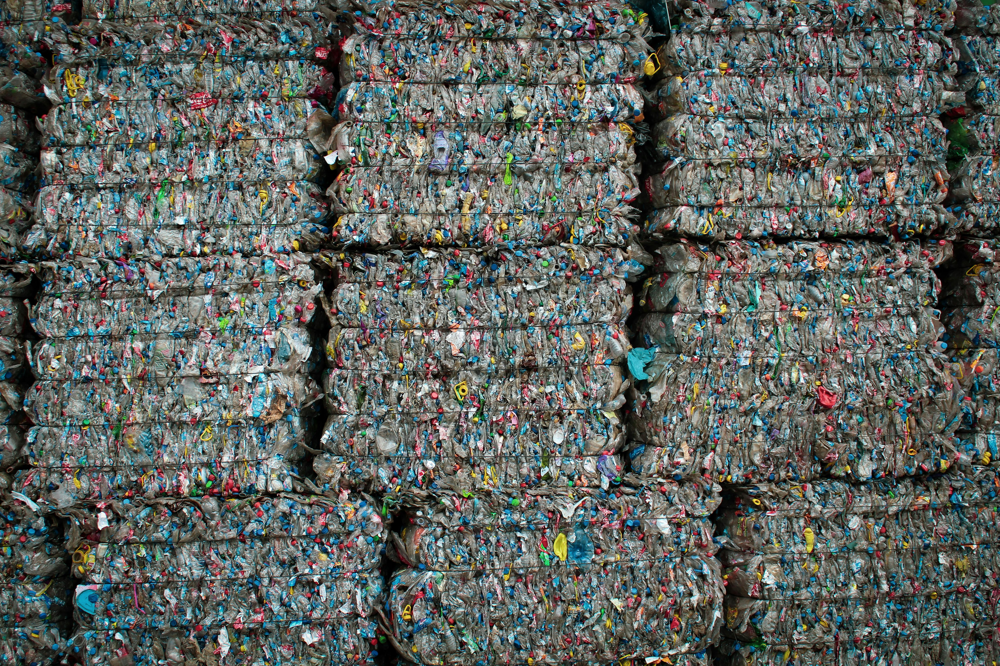
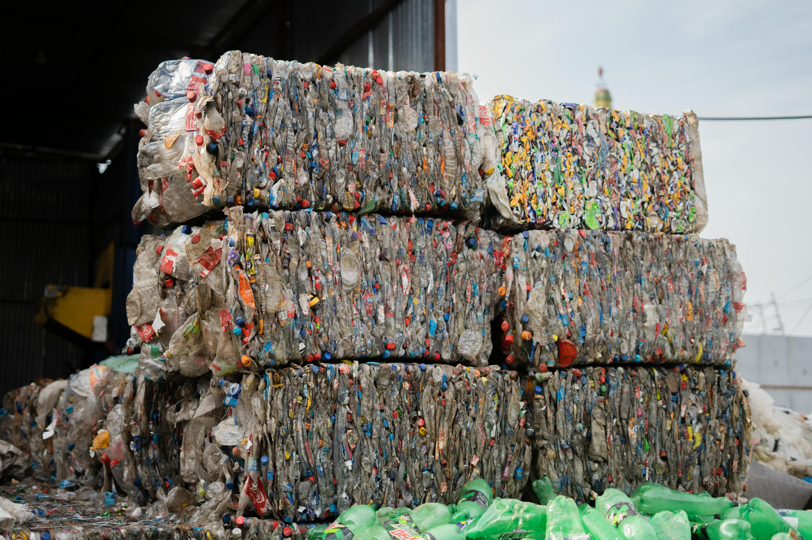
Centro de Acopio 6ta Avenida
Ver más about this is some title
Centro de Acopio Majahual
Ver más about this is some title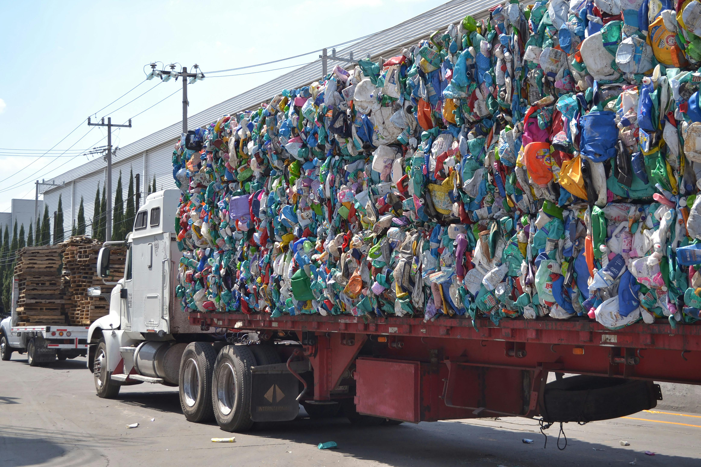
Centro de Acopio INCODESA
Ver más about this is some title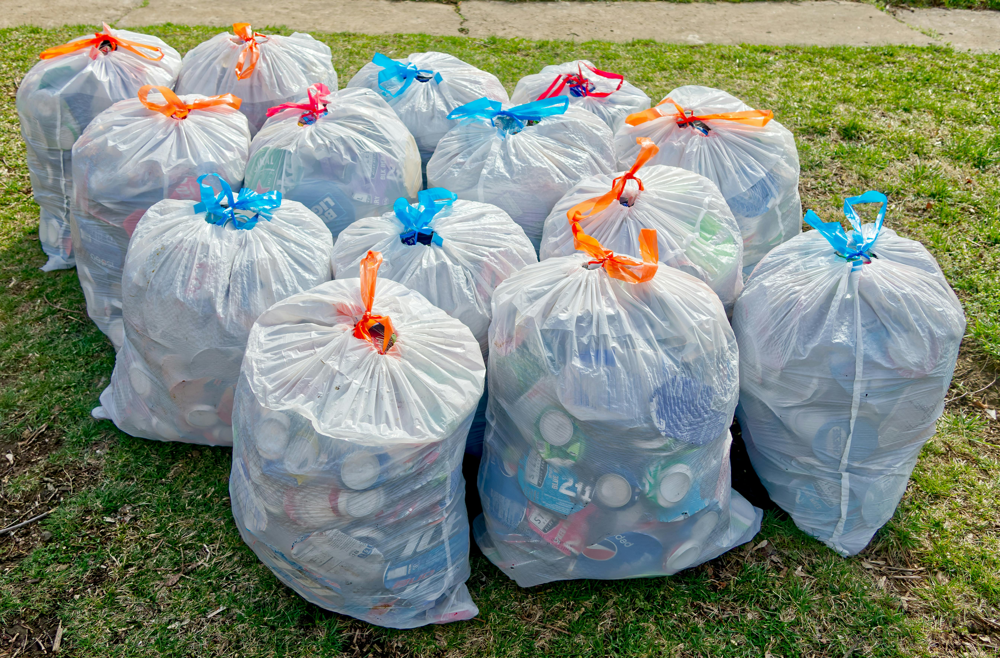
Centro de Acopio El Tamarindo
Ver más about this is some title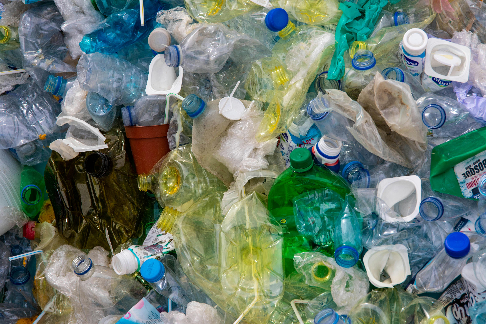
Centro de Acopio Ayala
Ver más about this is some title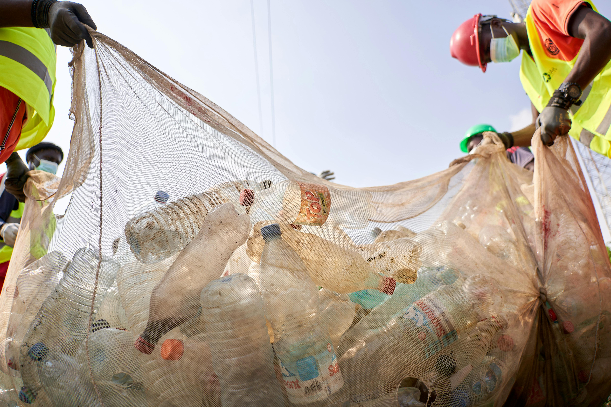
Centro de Acopio Recitodo
Ver más about this is some title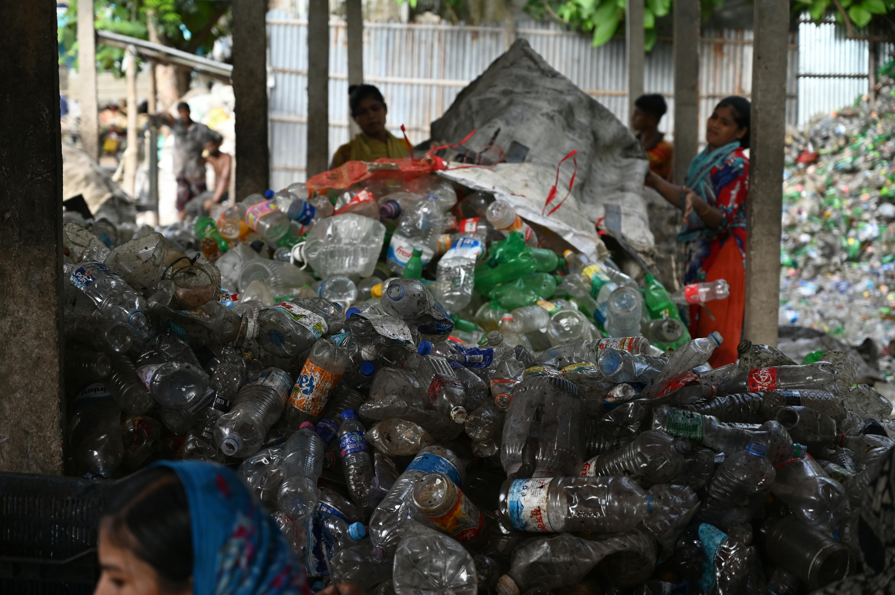
Centro de Acopio Servicios Y Reciclaje
Ver más about this is some title
Centro de Acopio planeta limpio
Ver más about this is some titleCentro de Acopio Jefren
Ver más about this is some title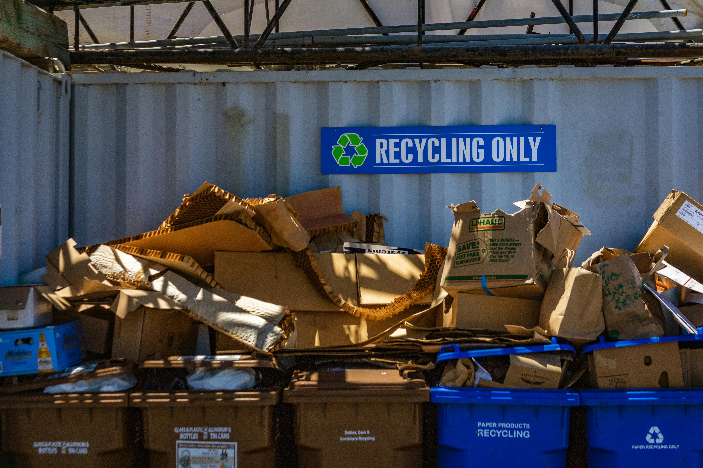
Centro de Acopio Sarmiento
Ver más about this is some title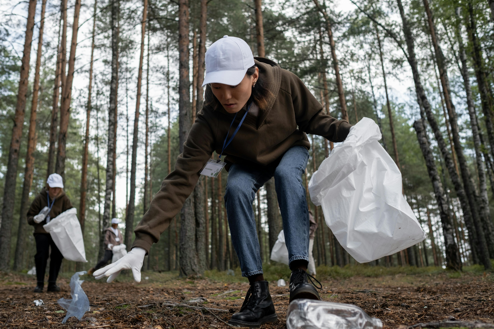
Centro de Acopio la Esperanza
Ver más about this is some title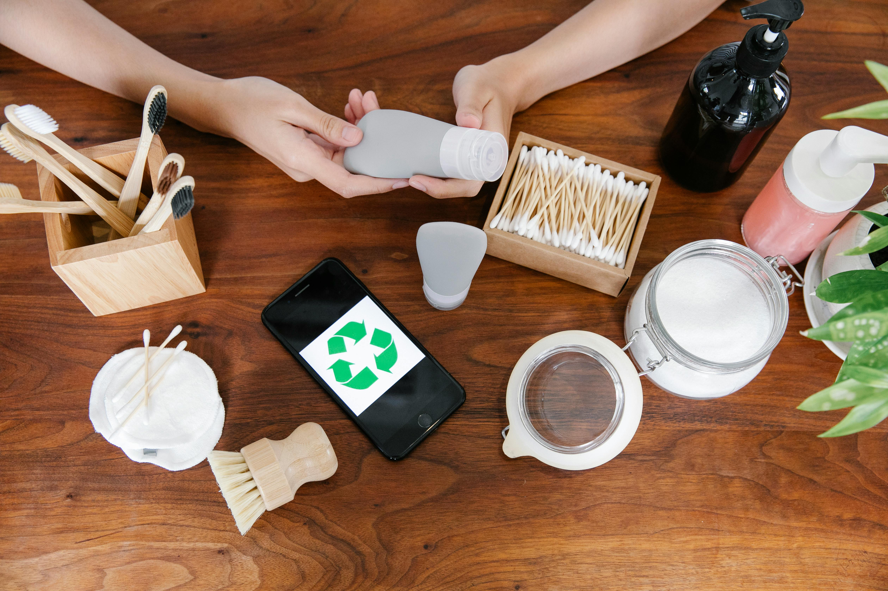
Centro de Acopio Rosa Rodriguez
Ver más about this is some titleCentro de Acopio LESE
Ver más about this is some title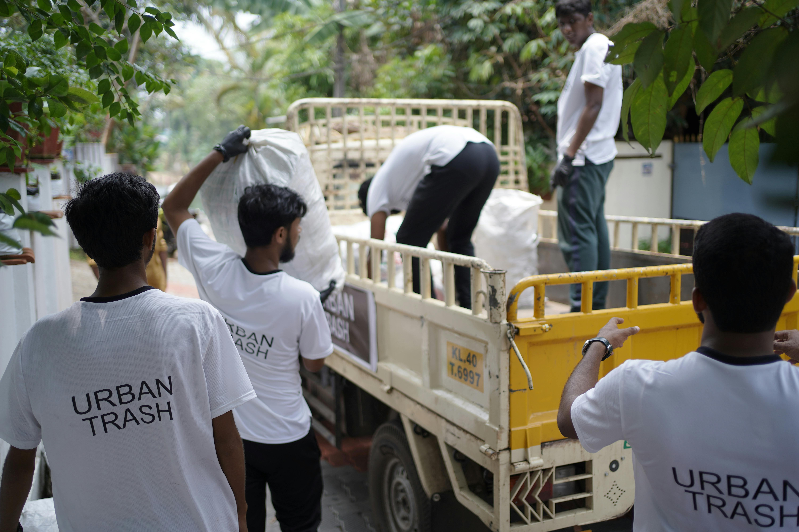